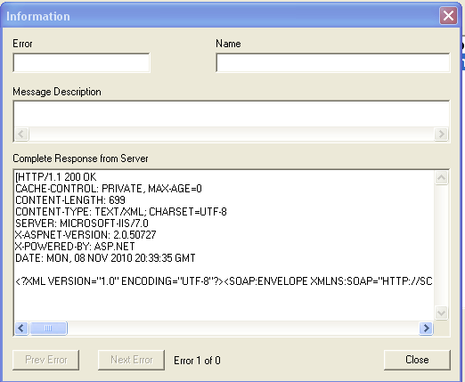

Marketron Import
To import aired information, select File -> Import -> Marketron in the upper left hand corner. From the Import Screen, click “Import”; there is no selectivity, the files are downloaded from the web and placed into a folder of the client’s name, such as: CSI\Prod\Import\XYZBroadcasting.
After processing, the files are then moved to a subfolder: CSI\Prod\Import\XYZBroadcasting\Completed. Files that were not read properly are marked as ‘Unread’ in the title. Files are stored for 365 days.
Example Import
This is an example of what Marketron is sending:
<Affidavit><AffidavitGUID>BB2D1891-DBC1-4063-A305-DBE5A6296D1F</AffidavitGUID><AffidavitRevision>1</AffidavitRevision><OrderID>Ace and TJ Ros\KBLXFM\20101122</OrderID><CallLetters>KBLX</CallLetters><Band>FM</Band><Signature>MySig</Signature><SignedUTC>2010-11-22T19:50:39.017</SignedUTC><ProgramName>Ace and TJ Ros</ProgramName><OrderStartDate>2010-11-22</OrderStartDate><OrderEndDate>2010-11-28</OrderEndDate><Comment>This affidavit was generated from a stored procedure.</Comment><AffidavitSpots>AffidavitSpot><SpotID>228186682</SpotID><DateAired>2010-11-26</DateAired><TimeAired>06:03:00</TimeAired><Length>30</Length><ISCICode /><CopyTitle /><AffidavitSpotStatus>Aired</AffidavitSpotStatus><DescrepancyNote /></AffidavitSpot></AffidavitSpots></Affidavit>
Marketron only indicates whether a spot has been aired or missed. If a spot airs outside of pledge time or daypart, it is flagged as non-compliant by the Counterpoint Affiliate system, not by the Marketron import. If a spot is not mentioned, it is reported as missed in Counterpoint.
Information Fields Imported
- AffidavitGUID
- Marketron only code
- Affidavit Revision
- Marketron only code
- OrderID
- Counterpoint matches on the <OrderID>George Carlin\KHHHFM\19991220</OrderID> exported for reconciliation
- Call Letters
- KHHH
- Band
- FM
- Signature
- This is the name of the person at the station that is completing the affidavit
- SignedUTC
- This is the date and time that the affidavit is being returned
- ProgramName
- This is the Vehicle name being imported <ProgramName>George Carlin</ProgramName>
- OrderStartDate
- This is either the Monday date of the week being imported
- OrderEndDate
- This is either the Sunday date of the week being imported
- Comment
- This is a Copy Comment from Counterpoint Traffic
- SpotId
- Unique ID generated in Counterpoint used for reconciliation
- DateAired
- Comes from Marketron
- TimeAired
- Comes from Marketron
- Length
- Comes from Traffic
- ISCICode
- Comes from Traffic
- CopyTitle
- Comes from Traffic
- AffidavitSpotStatus
- Comes from Marketron
- DescrepancyNote
- Comes from Marketron
Importing Makegoods and Missed Spots
Occasionally, a spot may be madegood on a sister station within its group.
Follow these procedures to accommodate these special cases:
- Marketron stations will post the exact times aired on each spot, and submit an Affidavit for the entire week to Counterpoint (Marketron cannot submit an affidavit for single day or a single spot).
- If a spot airs on the wrong day, wrong time, wrong vehicle, or wrong station, but in the ordered week, it will be included in the submission for that week, and Counterpoint knows to flag it as a MG.
- The submission to Counterpoint does not include any information about missed spots.
- Thus, at the end of each submission, Counterpoint infers that any spots not submitted are missed, and flags them as such. A special list of these missed spots is kept in the Counterpoint system.
- When spots that are missed by the stations are given MGs in subsequent weeks, and are posted as aired by the station, Marketron updates the date and time aired on the original missed spot.
- The only way to get that MG information back to Counterpoint is if the station remembers to re-submit the affidavit for the missed week.
- Counterpoint will reset all spots in the re-submitted weeks, including those previously-flagged as missed, to their original ordered days and time, and then re-post the entire week.
- Those spots that are still missed get re-flagged as such, and any makegoods found are updated.
- The Affiliate Spot Management report can be run at any time to show what missed spots have yet to be made good by the stations.
Importing Mismatched Spots
If spot additions/deletions are in Traffic or Affiliate after the Marketron export has been generated, those changes will not appear in the Marketron system unless the entire log is re-exported.
When these unusual cases arise, the system follows a set of rules to try to match the spots during the import process:
- If the ISCI code is the same, and the spots are in the same date and time range, the spot will be treated as a match.
- If the first test fails, the system checks if the ISCI is the same, and if the date is the same, but the time range isn’t the same, in which case it will be treated as a match.
- If the first two tests fail, matching ISCI codes, regardless of the date and time range, will be treated as a match.
- If it still doesn’t match after the first three tests, the system will take the ISCI code on the import file and identify the advertiser. Then will see if it can match up another ISCI code from that advertiser with the date and time range of the spot with the non-matching spot ID. If it can, the spot will be treated as a match.
If the system is able to match a spot using those tests, the spot is marked as aired and the following message will appear in the Marketron Import log:
::::::WARNING:::::::
2 spots were matched with different astcodes in Phil Collins-KAAA-FM-2015-12-07
:::::::::::::::::::
If the system is unable to match a spot after going through all these tests, then it will indicate that it was unable to process one or more spots in the Results window and on the Marketon Import log with an “AST Missing” message:
Unable to process: Billy Crystal,KBBB-FM, attCode: 2, Spot Length: 30, ISCI: ACD-NY-500-30, astCode:13693, Air date: 2015-12-25, Air time: 1:30:00, Status: C AST missing
During the import, if at least one spot was able to be aligned, the record will be marked as ‘Received’. Spots that are not able to be matched are marked as Missed. If all of the spots on the record are marked as Missed, the record will be imported as Did Not Air.
Special Mismatch Imports
Occasionally, ISCI changes will be made at the network after the Marketron export has occurred. If those changes are not re-exported to Marketron, the station will air the original ISCI codes that were sent. When those original ISCI codes are imported at the network, they will no longer match what is in the Affiliate system. When this happens, the ISCI code that actually ran at the station will replace the revised ISCI code in the Affiliate system.
Importing Partially Posted Weeks
The import program matches spots sent against spots received by their AST codes. Once exported, all ASTs (spots) are set to ‘Not Received’ until the matching AST code is imported.
- If there are no AST codes in the import file, the week will remain ‘Not Received’
- An import file that has some matching AST codes will mark those matching ASTs as ‘Aired’ and leave the unmatched ASTs as ‘Not Received’
- An import file that has matching ASTs, and those ASTs were missed in the Marketron system, will mark those matching ASTs as ‘Missed’
- An import file that contains AST codes, but not the AST codes that the program is matching against, will leave the week as ‘Not Received’
Import Problems
Any problems that occur during the import will show in the results box.
Sometimes, the following may be seen when an error occurs. The dll sending the information to the server will create this message box when it runs into an error. More information about the error can be found in the menu item “Accessories-> Messages”

Another source for information about the importing/exporting is in Import/Xxport log. The file is titled MarketronImportLog_MM-DD-YYYY.TXT, and is generally stored in the CSI\Prod\Data\Messages folder, but is controlled by the setting in the xml.ini file.
If there are issues with the import, the file gets marked as 'unread_' and stored in the completed folder.
The file name will indicate the following issues:
- If Counterpoint is unable to match any spot, the file will state that the spot did not match and be labeled “Unread Partial_”
- If no spots are processed, the file will be labeled “Unread”
- If the XML processing fails, the file will be labeled “NoProcess_”
- If the name test fails, the file will be labeled “UnreadFailTest_”
- If no spots were processed due to an inability to match the station, the file will be labeled “UnreadNoStation_”
- If a spot was madegood in the Marketron system, a warning message will display: WARNING Unable to process a spot because ast code was 0
Once the issues are resolved and the file is re-imported, the “Unread_” message will be removed from the file name.
When the Import button is clicked, the system deletes any MarketronImportLog_MM-DD-YYYY.TXT log file over 60 days.